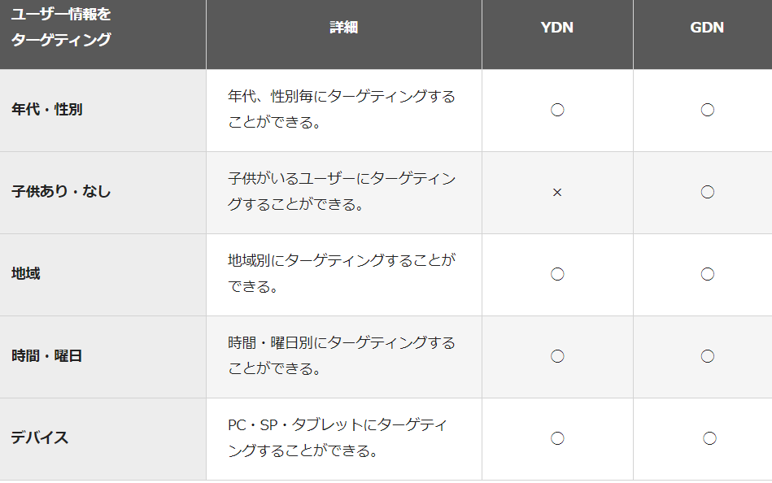

GDN→Google ディスプレイネットワークの略称
YouTubeやGmailのようなGoogleが提供するサービスのほか、
食べログやlivedoor、ブログサイトなどの提携サービスに広告が配信される。
YDN→Yahoo!ディスプレイアドネットワークの略称
クックパッドやNAVERなどの提携サイトのほか、
Yahoo!ニュースやYahoo!知恵袋などYahoo!JAPANが
提供するサービスに広告が配信されます。
2020年7月からはYahoo!広告 ディスプレイ広告（YDA）の提供が開始され、2021年春にはYDNは提供を終了予定。
YDNとGDNの違い
YDNとGDNの配信面
YDNとGDNの掲載フォーマット
ユーザー情報に合わせたターゲティング：YDN/GDN別
ユーザーの行動に合わせたターゲティング：YDN/GDN別
配信面に合わせたターゲティング：YDN/GDN別